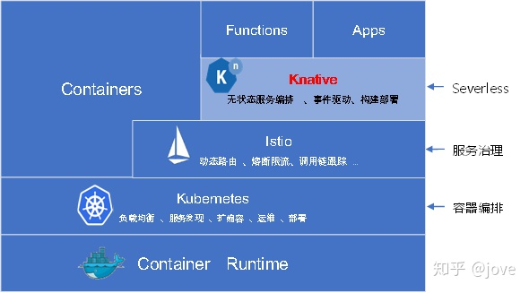
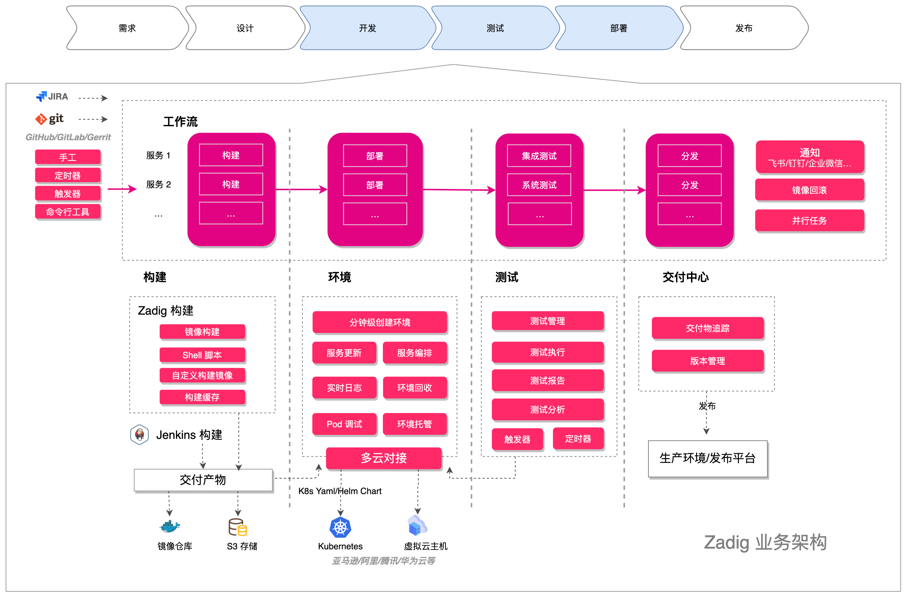
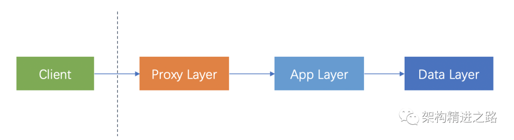
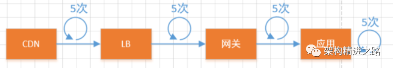
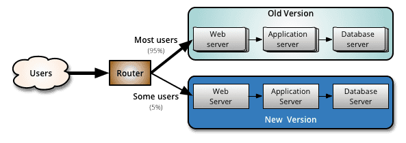
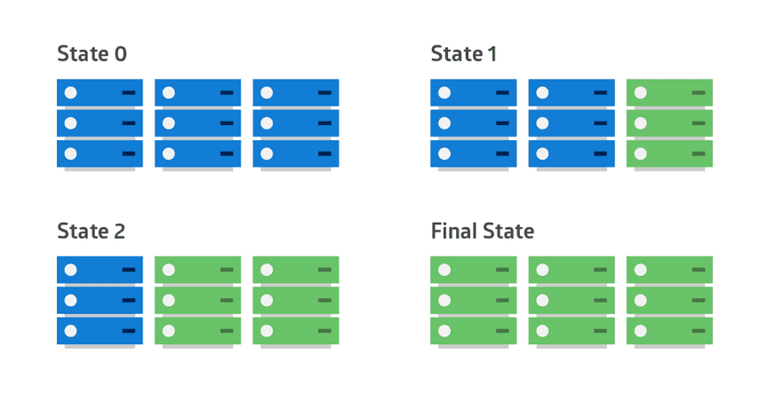

TODOs
网站性能研究
AI 助力提效
- 阅读Top AI/ML Libraries for JavaScript In 2021
- Playwright 结合 AI 技术，如何优化构建产物性能？
- Playwright 结合 AI 技术，如何测试UI组件的兼容性？
- Playwright 结合 AI 技术，如何为微服务带来实质上的提速？
-
Playwright 结合 AI 技术，如何提升网站的加载速度？
杂物
心得
1. 单体架构转向微服务，必须更注重 模块化
良好的架构始于模块化。拆分单体的第一步是考虑基于特性功能分割代码和数据。这个过程可以在真正在微服务环境中拆分之前在单体中完成。使代码库易于管理，通常都是一种良好的架构实践。确保每个服务都有自己的数据，并且能够控制对这些数据的访问，而且只能通过明确定义的 API 契约访问。
我看到，在很多情况下，人们会首先抽出代码逻辑，但仍然使用单体的共享数据库。这往往会导致分布式单体，这是最糟糕的单体，同时也是最糟糕的分布式。没有获得任何好处（比如，单独快速地向生产环境中部署一组特性），却还要应对微服务的复杂性。
2. 单体架构转向微服务，必须对 数据进行拆分
正确地拆分数据是从单体架构转向微服务的基础。这里将稍微详细地介绍下 GitHub 的做法。
首先，我们在现有的数据库模式中识别功能边界，并按照这些边界将实际的数据库表分组。例如，我们将所有存储库相关的表分到一起，所有用户相关的分到一起，所有项目相关的分到一起。我们将生成的功能分组称为
模式域，并记录在 YAML 定义文件中。现在，这个文件就成了事实来源。在数据库模式中添加或删除表，都要更新这个文件。我们通过一种静态分析测试方法来提醒开发人员，在修改数据库模式时，要更新这个文件。接下来，对于每个模式域，我们找了一个分区键。这是一个共享字段，将一个功能组中的所有信息联系在一起。例如，存储库模式域（其中包含所有与存储库相关的数据，如问题、pull 请求、评审意见）使用存储库 ID 作为分区键。最终，创建数据库模式功能组帮助我们将数据拆分到微服务架构所需的不同服务器和集群上。
对于当前的跨域查询，我们做了修复，以防数据拆分对产品造成破坏。在 GitHub，我们在单体中实现了一个查询监视器来帮助我们检测，并在发现跨域查询时发出告警信息。我们会根据域边界，把这些查询拆分并重写成多个，并在应用程序层实现必要的连接。在划分完功能组后，我们开始通过一个类似的过程，进一步将数据分片到相应的租户组。
GitHub 有超过 5000 万用户和 1 亿个存储库，在这样的规模下，功能组可能会变得非常大。这时，分区键就派上用场了。例如，一种简单的方法是根据数值范围将不同的用户分配到不同的数据存储。更常见的可能是根据每个数据集的特性（如区域和大小）所做的逻辑分组。Tenantizing 是一个很好的方法，可以将数据存储故障的爆炸半径限制在客户的一个子集里，而不是一下子影响到所有人。
心得引文：《GitHub 如何从单体架构迁移到微服务架构？》，对于Github有超过1000名的内部开发人员，内部快速增长的团队规模，让所有人都在同一个单体代码库上进行开发，不再是扩展Github最高效、最优化的方法。
3. 单体架构转向微服务， 标签语义方式是多么的重要
参照K8s的实践，通过标签来处理逻辑。而不是真正的IP地址，url地址。
4. 单体架构转向微服务， 从核心服务、共享资源入手
我们已经花了很多时间讨论数据拆分的重要性。现在，我们换个话题，介绍下从单体中抽取服务的基础工作。一定要记住，依赖方向只能从单体内到单体外，不能反过来，否则，我们最终会得到一个分布式单体。也就是说，当从单体中抽取服务时，要从核心服务入手，然后逐步到特性层面。
接下来，找出开发人员在单体环境中开发时所使用的助力工具。随着时间的推移构建一些共享工具以方便单体开发，这是很常见的。例如，我们的特性标识，可以让单体开发者安心地将新特性从测试环境转到生产环境，因为在这个过程中，他们可以通过这个标识控制谁能看到这些特性。将助力工具转移出来，让开发人员在单体之外也可以使用这些工具。
最后，在新服务上线运行后，务必要删除旧的代码路径。通过工具来识别谁在调用这个服务，并规划好如何将流量全部导向新服务，这样你就不用老是为两套代码提供支持了。在 GitHub，我们使用一个名为 Scientist 的工具帮我们处理这种上线，我们可以用它并排运行和比较新旧代码路径。
心得引文：《GitHub 如何从单体架构迁移到微服务架构？》
5. 单体架构转向微服务， 要解决 身份验证和授权
6. 单体架构转向微服务， 要解决 实现异步性和弹性代码
7. 深度理解 康威定律 的核心内涵，很重要
Conway’s law 最初来自于Conway在1967年发表的论文
从康威定律的角度来看，如果一个系统的每个部分都是独立的，那么这个系统就是一个系统。
设计系统的组织其产生的设计等价于组织间的沟通结构。
如果系统架构不支持，你无法建立一个高效的组织。
第一定律：组织沟通方式会通过系统设计表达出来；
对于复杂的，需要协作完成的系统开发，沟通是必须要持续提升的问题。每个团队由5-10人组成（沟通成本 = n(n-1)/2 - 《人月神话》），在团队内部进行频繁的、细粒度的沟通。对于团队外部，定义好接口，契约，只进行粗粒度的沟通。这样可以降低沟通成本，同时也符合高内聚，低耦合原则（代码和人员管理有些时候真是相通的）。
任何组织设计的系统，其结构都是对组织沟通结构的复制。反之亦然，单体架构会导致更大规模的涉众会议，更复杂的决策过程，因为交织的逻辑和共享的数据会影响所有团队。
例如，建立具有系统级所有权的特性团队，通过清晰定义的 API 契约确立职责边界。在遵循 API 契约的前提下，团队有充分的自由选择最适合自己的技术栈。代码库更小意味着阅读更容易、启动速度更快、问题排查更简单。开发人员不用为了提高生产力去理解一整个庞大的代码库的内部运行机制。最重要的是，服务现在可以根据各自的需求单独扩展。
第二定律：时间再多一件事情也不可能做的完美，但总有时间做完一件事情
这就是我们在用kanban管理迭代时几乎都有一列是BAU（Business As Usual ），其中会包括一些日常修复的Bug Story。敏捷开发中将迭代引入，做到持续交付，快速验证，迅速反馈，持续改进。
第三定律: 线型系统和线型组织架构间有潜在的异质同态特性
大白话就是，你想要架构成为什么样，就将团队分成怎样的结构。比如前后端分离的团队，架构就是基于前后端分离。在基于微服务设计的团队里，一个很好的理念是自管理。团队内部对于自己所负责的模块高度负责，进行端对端的开发以及运维。
第四定律: 大的系统组织总是比小系统更倾向于分解
合久必分，分久必合，团队以及架构都是在不断优化的。一个团队随着人员的增加，沟通以及管理成本一定会增加。
引文
软件测试理论
引文参照 Software Testing on Wikipedia
1. 软件测试分类
1.1. Testing levels(测试级别)
1.1.1. Unit testing(单元测试)
https://en.wikipedia.org/wiki/Unit_testing
Unit testing refers to tests that verify the functionality of a specific section of code, usually at the function level. In an object-oriented environment, this is usually at the class level, and the minimal unit tests include the constructors and destructors.
These types of tests are usually written by developers as they work on code (white-box style), to ensure that the specific function is working as expected. One function might have multiple tests, to catch corner cases or other branches in the code. Unit testing alone cannot verify the functionality of a piece of software, but rather is used to ensure that the building blocks of the software work independently from each other.
Unit testing is a software development process that involves a synchronized application of a broad spectrum of defect prevention and detection strategies in order to reduce software development risks, time, and costs. It is performed by the software developer or engineer during the construction phase of the software development life cycle. Unit testing aims to eliminate construction errors before code is promoted to additional testing; this strategy is intended to increase the quality of the resulting software as well as the efficiency of the overall development process.
Depending on the organization's expectations for software development, unit testing might include static code analysis, data-flow analysis, metrics analysis, peer code reviews, code coverage analysis and other software testing practices.
单元测试是对软件组成单元进行测试。其目的是检验软件基本组成单位的正确性。测试的对象是软件设计的最小单位：模块，所以又称为模块测试。
- 测试阶段：编码后
- 测试对象：最小模块
- 测试人员：白盒测试工程师或开发工程师
- 测试依据：代码和注释+详细设计文档
- 测试方法：白盒测试
- 测试内容：模块接口测试、局部数据结构测试、路径测试、错误处理测试、边界测试
- 测试扩展内容：静态代码分析、数据流分析、度量分析、结对代码审查、代码覆盖度分析
1.1.2. Integration testing(集成测试)
https://en.wikipedia.org/wiki/Integration_testing
集成测试也称
联合测试、组装测试，将程序模块采用适当的集成策略组装起来，对系统的接口及集成后的功能进行正确性检测的测试工作。主要目的是检查软件单位之间的接口是否正确。
- 测试阶段：一般单元测试之后进行
- 测试对象：模块间的接口
- 测试人员：白盒测试工程师或开发工程师
- 测试依据：单元测试的模块+概要设计文档
- 测试方法：黑盒测试与白盒测试相结合
- 测试内容：模块之间数据传输、模块之间功能冲突、模块组装功能正确性、全局数据结构、单模块缺陷对系统的影响
1.1.3. System testing(系统测试)
https://en.wikipedia.org/wiki/System_testing
将软件系统看成是一个系统的测试。包括对功能、性能以及软件所运行的软硬件环境进行测试。时间大部分在系统测试执行阶段。
- 测试阶段：集成测试通过之后
- 测试对象：整个系统（软、硬件）
- 测试人员：黑盒测试工程师
- 测试依据：需求规格说明文档
- 测试方法：黑盒测试
- 测试内容：功能、界面、可靠性、易用性、性能、兼容性、安全性等
1.1.4. Acceptance testing(验收测试)
https://en.wikipedia.org/wiki/Acceptance_testing
验收测试是部署软件之前的最后一个测试操作。它是技术测试的最后一个阶段，也称为
交付测试。验收测试的目的是确保软件准备就绪，按照项目合同、任务书、双方约定的验收依据文档，向软件购买都展示该软件系统满足原始需求。
- 测试阶段：系统测试通过之后
- 测试对象：整个系统（包括软硬件）
- 测试人员：主要是最终用户或者需求方
- 测试依据：用户需求、验收标准
- 测试方法：黑盒测试
- 测试内容：同系统测试(功能...各类文档等)
1.2. Testing approach(测试方法)
1.2.1. Static, dynamic, and passive testing(静态、动态、被动)
1.2.2. Exploratory approach(探索测试)
1.2.3. The "box" approach(盒子测试)
1.2.3.1. White-box testing(白盒子测试)
https://en.wikipedia.org/wiki/White-box_testing
白盒测试又称结构测试、透明盒测试、逻辑驱动测试或基于代码的测试。白盒指的打开盒子，去研究里面的源代码和程序结果。
一般包括：
- API testing(接口测试)
- Code coverage(代码覆盖度)
- Fault injection(故障注入)
- Mutation testing(突变测试)
- Static testing(静态测试)
1.2.3.2. Black-box testing(黑盒子测试)
https://en.wikipedia.org/wiki/Black-box_testing
黑盒测试也称功能测试，测试中把被测的软件当成一个黑盒子，不关心盒子的内部结构是什么，只关心软件的输入数据与输出数据。
一般包括：
- Component interface testing(组件接口测试)
- Visual testing(可视化测试)
- Graphical user interface testing(图形化用户交互测试)
1.2.3.3. Grey-box testing(灰盒子测试)
https://en.wikipedia.org/wiki/Gray_box_testing
灰盒测试，是介于白盒测试与黑盒测试之间的一种测试，灰盒测试多用于集成测试阶段，不仅关注输出、输入的正确性，同时也关注程序内部的情况。
1.3. Testing types(测试类型)
1.3.1. Installation testing(安装测试)
https://en.wikipedia.org/wiki/Installation_testing
1.3.2. Compatibility testing(兼容性测试)
https://en.wikipedia.org/wiki/Compatibility_testing
1.3.3. Smoke and sanity testing(冒烟测试)
冒烟测试目的是确认软件基本功能正常，冒烟测试的执行者是版本编译人员/开发人员。
在《微软项目求生法则》一书第14章“构建过程”关于冒烟测试，就是开发人员在个人版本的软件上执行目前的冒烟测试项目，确定新的程序代码不出故障
现基本执行对象为测试人员，在正规测试一个新版本之前，投入较少的人力和时间验证基本功能，通过则测试准入。
1.3.4. Regression testing(回归测试)
回归测试是指修改了旧代码后，重新进行测试以确认修改没有引入新的错误或导致其他代码产生错误。自动回归测试将大幅降低系统测试、维护升级等阶段的成本。
在整个软件测试过程中占有很大的工作量比重，软件开发的各个阶段都会进行多次回归测试。通过选择正确的回归测试策略来改进回归测试的效率和有效性是很有意义的。
1.3.5. Acceptance testing(验收测试)
https://en.wikipedia.org/wiki/Acceptance_testing
1.3.6. Alpha testing(α测试)
α测试是由一个用户在开发环境下进行的测试，也可以是公司内部的用户在模拟实际操作环境下进行的测试。α测试的目的是评价软件产品的FLURPS(即功能、局域化、可使用性、可靠性、性能和支持)。
大型通用软件，在正式发布前，通常需要执行α测试和β测试。α测试不能由程序员或测试员完成。
1.3.7. Beta testing(β测试)
β测试是一种验收测试。β测试由软件的最终用户们在一个或多个客房场所进行。
α测试与β测试的区别：
测试的场所不同：α测试是指把用户请到开发方的场所来测试,β测试是指在一个或多个用户的场所进行的测试。
α测试的环境是受开发方控制的,用户的数量相对比较少,时间比较集中。β测试的环境是不受开发方控制的,用户数量相对比较多,时间不集中。
α测试先于beta测试执行。通用的软件产品需要较大规模的β测试,测试周期比较长。
1.3.8. Functional vs non-functional testing(功能及非功能测试)
- https://en.wikipedia.org/wiki/Functional_testing
- https://en.wikipedia.org/wiki/Non-functional_testing
功能测试是指验证代码的特定操作或功能的活动。 这些通常在代码要求文档中找到，尽管某些开发方法从用例或用户故事中工作。 功能测试倾向于回答“用户可以做到这一点”或“这个特定的功能工作。”的问题。
非功能测试是指软件的方面可能与特定函数或用户动作（例如可伸缩性或其他性能），在某些约束或安全性下的缩放性或其他性能。 测试将确定断裂点，可扩展性或性能极低的点导致不稳定执行。 非功能性要求往往是反映产品质量的那些，特别是在其用户的适用性视角的背景下。
1.3.9. API testing(接口测试)
https://en.wikipedia.org/wiki/API_testing
1.3.10. Continuous testing(持续测试)
https://en.wikipedia.org/wiki/Continuous_testing
持续测试是作为软件交付管道的一部分执行自动测试的过程，以获得关于与软件发布候选人相关的业务风险的直接反馈。持续测试测试包括验证功能要求和非功能性要求; 测试范围扩展了验证自下而上要求或用户故事，以评估与总体业务目标相关的系统要求。
1.3.11. Destructive testing(破坏性测试)
https://en.wikipedia.org/wiki/Destructive_testing
破坏性测试尝试导致软件或子系统失败。 即使在收到无效或意外输入的情况下，它验证软件是否正常运行，从而建立输入验证和错误管理例程的稳健性。软件故障注入，以模糊的形式是故障测试的一个例子。 各种商业非功能性测试工具与软件故障注入页面相关联; 还有许多开源和可用的免费软件工具，可提供破坏性测试。
一般测试内容包括：
1.3.12. Software performance testing(软件性能测试)
https://en.wikipedia.org/wiki/Software_performance_testing
通常执行性能测试以确定系统或子系统如何在特定工作负载下的响应性和稳定性方面执行。 它还可以用于调查，测量，验证或验证系统的其他质量属性，例如可伸缩性，可靠性和资源使用情况。
负载测试主要关注测试系统可以在特定负载下继续运行，无论是大量数据还是大量用户。 这通常被称为软件可伸缩性。 当非功能性活动的相关负载测试活动通常被称为耐久性测试。 卷测试是一种测试软件功能的方法，即使某些组件（例如文件或数据库）大小而增加。 压力测试是在意外或罕见工作负载下测试可靠性的一种方式。 稳定性测试（通常称为负载或耐久性测试）检查，看看软件是否可以在可接受的时间内或高于可接受的时段中持续运行。
关于性能测试的具体目标几乎没有一致。 术语负载测试，性能测试，可扩展性测试和音量测试通常常用。
实时软件系统具有严格的计时约束。 要测试是否满足时序约束，则使用实时测试。
1.3.13. Usability testing(易用性测试)
https://en.wikipedia.org/wiki/Usability_testing
可用性测试是检查用户界面是否易于使用和理解。 它主要涉及应用程序的使用。 这不是一种可以自动化的测试; 需要实际的用户，由熟练的UI设计人员监控。
1.3.14. Accessibility testing(可访问性测试)
https://en.wikipedia.org/wiki/Accessibility
可访问性测试可能包括符合标准，例如：
- Americans with Disabilities Act of 1990
- Section 508 Amendment to the Rehabilitation Act of 1973
- Web Accessibility Initiative (WAI) of the World Wide Web Consortium (W3C)
1.3.15. Security testing(安全测试)
https://en.wikipedia.org/wiki/Security_testing
安全测试对于处理机密数据的软件至关重要，以防止黑客系统入侵。
1.3.16. Internationalization and localization(国际化和本地化测试)
用于国际化和本地化的测试验证了该软件可以与不同的语言和地理区域一起使用。 Pseudolocalization的过程用于测试应用程序将应用程序转换为另一种语言的能力，并更容易识别当本地化过程可能将新错误引入产品。
全球化测试验证软件适用于新的文化（如不同的货币或时区）。
一般需要测试的情况：
- 软件通常是通过转换上下文的字符串列表，而翻译器可能为模糊源字符串选择了错误的转换。
- 如果项目由几个人翻译，则在没有适当的协调的情况下或转换员不谨慎的话，技术术语可能会变得不一致。
- 文字词语翻译可能听起来不当，人为或过于技术的目标语言。
- 原始语言中的未转换消息可能在源代码中硬编码。
- 可以在运行时自动创建某些消息，并且生成的字符串可以是不正确的，功能不正确，误导或混淆。
- 软件使用源语言键盘布局没有函数的键盘快捷键，用于了在目标语言的布局中键入字符。
- 软件可能缺乏对目标语言的字符编码的支持。
- 在源语言中适用的字体和字体大小可能在目标语言中不合适; 例如，如果字体太小，CJK字符可能会变得不可读。
- 目标语言中的字符串可能比软件可以句柄长。 这可能会使字符串对用户部分不可见，或使软件崩溃或故障。
- 软件可能缺乏对读取或写作双向文本的适当支持。
- 软件可能会显示未本地化的文本的图像。
- 本地化操作系统可能具有不同命名的系统配置文件和环境变量以及日期和货币的不同格式。
1.3.17. Development testing(开发测试)
https://en.wikipedia.org/wiki/Development_testing
开发测试是一种软件开发过程，涉及广泛的缺陷预防和检测策略的同步应用，以减少软件开发风险，时间和成本。 它由软件开发人员或工程师在软件开发生命周期的施工阶段进行。 开发测试旨在消除代码促进到其他测试之前的施工错误; 该策略旨在提高所得软件的质量以及整体开发过程的效率。
根据组织对软件开发的期望，开发测试可能包括静态代码分析，数据流分析，指标分析，对等代码评价，单元测试，代码覆盖分析，可追溯性和其他软件测试实践。
1.3.18. A/B testing(A/B测试)
https://en.wikipedia.org/wiki/A/B_testing
A/B测试是运行受控实验的方法，以确定提出的变化是否比当前方法更有效。 客户被路由到特征的当前版本（控制），或者收集到修改的版本（处理），并收集数据以确定哪个版本更好地实现所需结果。
1.3.19. Concurrent testing(并发测试)
https://en.wikipedia.org/wiki/Concurrent_testing
并发测试评估使用并发计算的软件和系统的行为和性能，通常在正常使用条件下。
典型问题这种类型的测试将暴露是死锁，种族条件和共享内存/资源处理的问题。
1.3.20. Conformance testing or type testing(一致性和类型测试)
https://en.wikipedia.org/wiki/Conformance_testing
在软件测试中，一致性测试验证了产品根据其指定标准执行。 例如，编译器被广泛测试以确定它们是否符合该语言的公认标准。
1.3.21. Output comparison testing(输出比较测试/快照测试)
创建显示预期输出，无论是UI的文本或屏幕截图的数据比较，有时被称为快照测试，不同于许多其他形式的测试，这不能自动检测失败，而是要求测试人员评估输出不一致。
1.3.22. Property testing(属性测试)
Property testing is a testing technique where, instead of asserting that specific inputs produce specific expected outputs, the practitioner randomly generates many inputs, runs the program on all of them, and asserts the truth of some "property" that should be true for every pair of input and output. For example, every input to a sort function should have the same length as its output. Every output from a sort function should be a monotonically increasing list. Property testing libraries allow the user to control the strategy by which random inputs are constructed, to ensure coverage of degenerate cases, or inputs featuring specific patterns that are needed to fully exercise aspects of the implementation under test. Property testing is also sometimes known as "generative testing" or "QuickCheck testing" since it was introduced and popularized by the Haskell library "QuickCheck."
基于属性的测试技术（ Property-based testing），是指编写对你的代码来说为真的逻辑语句（即“属性”），然后使用自动化工具来生成测试输入（一般来说，是指某种特定类型的随机生成输入数据），并观察程序接受该输入时属性是否保持不变。 如果某个输入违反了某一条属性，则用户证明程序存在一处错误，并找到一个能够演示该错误的便捷示例。 基于属性的测试技术的一个经典示例是测试一个sort（排序）函数，具体代码如下所示。 这个测试过程假定，给定一列整数，对其进行排序 - 保持元素的集合不变 - 生成一个有序输出 随后，测试框架将针对一些输入序列的集合自动化执行上述代码，并报告是否发现反例。
1.3.23. VCR testing(记录重放测试/播放测试)
VCR testing, also known as "playback testing" or "record/replay" testing, is a testing technique for increasing the reliability and speed of regression tests that involve a component that is slow or unreliable to communicate with, often a third-party API outside of the tester's control. It involves making a recording ("cassette") of the system's interactions with the external component, and then replaying the recorded interactions as a substitute for communicating with the external system on subsequent runs of the test.
VCR测试，也称为“播放测试”或“记录/重放”测试，是提高回归测试的可靠性和速度的测试技术，涉及与之通信的组件，通常是第三方API的速度慢或不可靠 在测试人员的控制之外。 它涉及制作系统与外部组件的交互的录制（“盒式”），然后将记录的交互重播为与外部系统在后续运行中与外部系统进行通信的替代。
1.3.24. Ad-hoc Testing(随机测试)
随机测试主要是根据测试者的经验对软件进行功能和性能抽查。
根据测试说明书执行用例测试的重要补充手段，是保证测试覆盖完整性的有效方式和过程。
随机测试主要是对被测软件的一些重要功能进行复测，也包括测试那些当前的测试用例(TestCase)没有覆盖到的部分。
1.3.25. Exploratory testing(探索性测试)
探索性测试可以说是一种测试思维技术。它没有很多实际的测试方法、技术和工具，但是却是所有测试人员都应该掌握的一种测试思维方式。探索性强调测试人员的主观能动性，抛弃繁杂的测试计划和测试用例设计过程，强调在碰到问题时及时改变测试策略。
2. 软件测试分类边界划分
2.1. 按开发阶段划分
- 单元测试(Unit Testing)
- 集成测试(Integration Testing)
- 系统测试(System Testing)
- 验收测试(Acceptance Testing)
2.2. 按是否运行划分
- 静态测试(Static Testing)
- 动态测试(Dynamic Testing)
2.3. 按是否查看代码划分
- 白盒测试(White-box Testing)
- 黑盒测试(Black-box Testing)
- 灰盒测试(Gray-box Testing)
2.4. 按是否手工操作执行
- Manual Testing(手工测试)
手工测试就是由人去一个一个的输入用例，然后观察结果，和机器测试相对应，属于比较原始但是必须的一个步骤。 优点：自动化无法替代探索性测试、发散思维类无既定结果的测试 缺点：执行效率慢，量大易错。
- Automation Testing(自动化测试)
就是在预设条件下运行系统或应用程序，评估运行结果，预先条件应包括正常条件和异常条件。简单说自动化测试是把以人为驱动的测试行为转化为机器执行的一种过程。 自动化测试比如功能测试自动化、性能测试自动化、安全测试自动化。 通常所说的自动化是指功能测试自动化 AI技术的兴起发展，类似可预见工作都有可能会被伪AI代替.
2.5. 其他
- 随机测试(Ad-hoc Testing)
- 冒烟测试(Smoke Testing)
- 安全测试(Security Testing)
- 探索性测试(Exploratory Testing)
- 回归测试(Regression Testing)
- α测试(Alpha Testing)
- β测试(Beta Testing)
- ...
3. 软件测试流程
3.1. 传统的瀑布开发模式下的测试
瀑布开发中的一个常见实践是测试是由一组独立的测试人员执行的。
3.2. 敏捷/极限开发模式下的测试
相反，一些新兴的软件学科，如极限编程和敏捷软件开发运动，坚持“测试驱动的软件开发”模型。
在这个过程中，软件工程师首先编写单元测试(通常使用极端编程方法中的结对编程)。预计测试最初会失败。每次失败的测试之后都编写足够的代码使其通过。
这意味着当发现新的故障条件和角落用例时，测试套件会不断更新，并且与开发的任何回归测试集成。单元测试与软件源代码的其余部分一起维护，通常集成到构建过程中(固有的交互性测试被归入部分手工的构建验收过程)。
这个测试过程的最终目标是支持持续集成和减少缺陷率。
这种方法增加了开发完成的测试工作，在到达任何正式的测试团队之前。在其他一些开发模型中，大多数测试执行发生在定义了需求并完成了编码过程之后。
3.3. 测试的生命周期
一般测试的生命周期，包括：
- 需求分析：测试应在软件开发生命周期的需求阶段开始。 在设计阶段，测试人员可以确定设计的哪些方面是可测试的，并且需要哪些参数。
- 测试计划: 测试策略，测试计划，测试台创建。由于在测试期间将执行许多活动，因此需要一个计划。
- 测试开发: 测试过程，测试场景，测试用例，测试数据集，测试脚本。
- 测试执行: 测试人员根据计划和测试文档执行软件，然后报告开发团队中的任何错误。 在缺乏编程知识的运行测试时，此部分可能是复杂的。
- 输出测试报告: 一旦测试完成，测试人员生成量度，并对他们的测试工作以及被测试的软件是否准备好发布做出最终报告。
- 测试结果分析: 或者缺陷分析，通常是由开发团队和客户一起完成的，为了决定哪些缺陷应该被分配、修复、拒绝(即发现的软件正常工作)或者推迟到以后处理。
- 缺陷重新测试: 一旦开发团队处理了一个缺陷，测试团队就会重新测试它。
- 回归测试: 为了确保最新的交付没有破坏任何东西，并且软件产品作为一个整体仍然正确地工作，一个由测试子集构建的小测试程序是很常见的。
- 测试结束: 一旦测试符合退出标准，捕获关键输出，经验教训，结果，日志，与项目相关的文档等活动将被归档，并将其作为未来项目的参考。
4. 软件测试组成部分
4.1. Test plan(测试计划)
测试计划是一份详细说明将用于预期测试活动的方法的文档。计划可以包括目标、范围、过程和程序、人员要求和应急计划等方面测试计划可能是一个计划,包括所有形式的测试类型(如接受或系统测试计划)和规划考虑,或者它可能是发行主测试计划,概述了一个以上的详细测试计划(计划)的计划。在某些情况下，测试计划可以是广泛的“测试策略”的一部分，它记录了整个测试策略
4.2. Traceability matrix(追溯矩阵)
追溯矩阵是将需求或设计文档与测试文档关联起来的表格。它用于在相关源文档被更改时更改测试，在计划回归测试时通过考虑需求覆盖率来选择测试用例以执行。
4.3. Test case(测试用例)
测试用例通常由唯一的标识符组成，从设计规范，前提条件，事件，一系列步骤（也称为动作）来组成，以遵循，输入，输出，预期结果和实际结果。 临床定义，测试用例是输入和预期结果。这可以像“条件x的条件x一样”，尽管通常测试案例更详细地描述了输入方案以及可能预期的结果。 它偶尔可以是一系列步骤（但通常阶梯通常包含在单独的测试程序中，该测试程序可以根据经济问题而无法对多个测试用例进行），但具有一个预期的结果或预期结果。 可选字段是测试用例ID，测试步骤或执行编号，相关要求，深度，测试类别，作者以及复选框，以及是否自动化。 较大的测试用例也可能包含先决条件状态或步骤和描述。 测试案例还应包含实际结果的地方。 这些步骤可以存储在字处理器文档，电子表格，数据库或其他常见存储库中。 在数据库系统中，您还可以看到生成结果的过去的测试结果以及系统配置用于生成这些结果的测试结果。 这些过去的结果通常将存储在单独的表中。
4.4. Test script(测试脚本)
测试脚本是复制用户操作的过程或编程代码。最初，这个术语来源于自动回归测试工具创建的工作产品。测试用例将是使用工具或程序创建测试脚本的基线。
4.5. Test suite(测试套件)
测试用例的集合最常见的术语是测试套件。测试套件通常还包含每个测试用例集合的更详细的说明或目标。它肯定包含测试人员识别测试期间使用的系统配置的部分。一组测试用例也可能包含先决条件状态或步骤，以及对以下测试内容的描述。
4.6. Test fixture(测试夹具)/data
在大多数情况下，使用多个值或数据集来测试特定特性的相同功能。所有的测试值和变化的环境成分收集在单独的文件中，并作为测试数据存储。为客户端和产品或项目提供这些数据也很有用。有一些技术可以生成测试数据。
4.7. Test harness(测试工具)
软件、工具、数据输入和输出的样本，以及配置都被统称为测试工具。
4.8. Test run(测试运行/测试运行器)
运行测试用例或测试套件的结果报告
5. 软件测试质量度量
https://en.wikipedia.org/wiki/Software_quality
质量措施包括正确，完整性，安全性和ISO / IEC 9126要求等主题，例如能力，可靠性，效率，可移植性，可维护性，兼容性和可用性等要求。
有许多常用的软件指标或措施，用于帮助确定软件的状态或测试的充分性。
1. 软件架构模式
1.1. 模式分类
1.1.1. 分层模式（Layered pattern）
1.1.2. 客户端-服务器模式（Client-server pattern）
1.1.3. 主从模式（Master-slave pattern）
1.1.4. 管道-过滤器模式（Pipe-filter pattern）
1.1.5. 代理模式（Broker pattern）
1.1.6. 点对点模式（Peer-to-peer pattern）
1.1.7. 事件-总线模式（Event-bus pattern）
1.1.8. 模型-视图-控制器模式（Model-view-controller pattern）
1.1.9. 黑板模式（Blackboard pattern）
1.1.10. 解释器模式（Interpreter pattern）
1.2. 参考
微服务架构
Kubernetes
1. 官方网站
2. 中文
- Kubernetes 官方文档中文版
- Kubernetes 中文社区
- 第三方 https://kuboard.cn/
- 源码已经备份到 https://github.com/lauer3912/kuboard-press
- 在线Demo: https://demo.kuboard.cn/, 用户名及密码: demo/demo123
3. 架构图及关键术语
4. 安装
4.1. 基于WSL2和Kind或Minikube：搭建Windows版Kubernetes
参见：https://www.kubernetes.org.cn/7723.html
5. 常用术语
CRD：CustomResourceDefinition, 在 Kubernetes 中一切都可视为资源，Kubernetes 1.7 之后增加了对 CRD 自定义资源二次开发能力来扩展 Kubernetes API，通过 CRD 我们可以向 Kubernetes API 中增加新资源类型，而不需要修改 Kubernetes 源码来创建自定义的 API server，该功能大大提高了 Kubernetes 的扩展能力。参考：https://www.jianshu.com/p/cc7eea6dd1fb 或 https://kubernetes.io/zh/docs/tasks/extend-kubernetes/custom-resources/custom-resource-definitions/
服务网格中间件
引文参照：
更多文章
定义
Phil Calçado 在他的这篇博客 Pattern: Service Mesh 中详细解释了服务网格的来龙去脉：
- 从最原始的主机之间直接使用网线相连
- 网络层的出现
- 集成到应用程序内部的控制流
- 分解到应用程序外部的控制流
- 应用程序的中集成服务发现和断路器
- 出现了专门用于服务发现和断路器的软件包/库，如 Twitter 的 Finagle 和 Facebook 的 Proxygen，这时候还是集成在应用程序内部
- 出现了专门用于服务发现和断路器的开源软件，如 Netflix OSS、Airbnb 的 synapse 和 nerve
- 最后作为微服务的中间层服务网格出现
优缺点
参读《微服务架构深度解析：原理、实践与进阶》
蚂蚁金服
在线预览 蚂蚁金服-使用CloundMesh体验ServiceMesh.pdf
Knative
定位

引用
Sealos 蜜罐
阿里巴巴从去年五月份内部开始在某些场景使用sealos，内部fork的版本trident在sealos基础上作出了非常多的优化使系统更加稳定功能更加强大。 21年开始重大创新的想法也彻底使sealos脱胎换骨，实现整个集群的 build share run, 我们希望这些能力也能够惠及更多开源社区的开发者们。
站点链接
云原生架构
特性
案例
Zadig 业务架构
云原生持续交付 面向开发者设计的开源、高可用 CI/CD：Zadig 强大的云原生多环境能力，轻松实现本地联调、微服务并行构建、集成测试和持续部署。 Zadig 不改变现有流程，无缝集成 GitHub/GitLab、Jenkins、多家云厂商。
简介
Zadig 是 KodeRover 公司基于 Kubernetes 自主设计、研发的开源分布式持续交付 (Continuous Delivery) 产品，为开发者提供云原生运行环境，支持开发者本地联调、微服务并行构建和部署、集成测试等。Zadig 内置了面向 Kubernetes、Helm、云主机、大体量微服务等复杂业务场景的最佳实践，为工程师一键生成自动化工作流 (workflow)。Zadig 不改变现有习惯和流程，几乎兼容所有软件架构，无缝集成 GitHub/GitLab、Jenkins、多家云厂商等，运维成本极低。
架构图

核心能力
-
高并发的工作流
系统经过简单配置，即可自动生成高并发工作流，高效执行构建、部署、测试等任务。这一设计解决了微服务架构下带来的多服务交付效率低下的问题。
-
以服务为核心的集成环境
只需一套服务配置，即可在几分钟创建多套数据隔离的测试环境，为开发者日常调试、集成测试验证、产品演示提供强力支撑。现有环境无需迁移，一键托管即可轻松浏览、调试环境中的所有服务。
-
无侵入的自动化测试
便捷对接已有的自动化测试框架，通过 GitHub/GitLab WebHook 自动构建、部署、测试。通过办公 IM 机器人为开发者提供第一时间质量反馈，有效实现“测试左移”，充分体现测试价值。
-
开发本地联调 CLI
开发可以本地编辑代码，一键构建、部署到联调环境，无需处理复杂且繁琐的工作流程，省出宝贵时间去创造更多产品价值。
为谁服务
开发工程师
- 基于 Git PR 级别的持续集成，并获得单元测试，代码扫描，耗时和通过率的质量反馈和改进建议
- 定时器/WebHook 支持 PR/Branch 自动触发执行交付工作流，集成环境更新，自动化测试，获得详细的质量结果反馈
- 一键生成独立集成环境，可直连容器云集成环境进行开发、调试、自测
测试（开发）工程师
- 测试任务维护和管理，通过工作流执行自动化功能测试和性能，获得相应测试报告
- 管理/执行一个项目的交付工作流任务，成功执行后，进行版本交付，并获得交付版本的服务配置、镜像信息、代码信息、测试结果等
DevOps 工程师
- 一个产品可以实现完整的容器化集成环境管理
- 根据 Branch/Tag 执行发布工作流，版本交付完整信息数据流，不限于需求/代码/工作流/配置的 changelog
项目管理/产品管理/工程效率管理人员
- 可以随时将新功能展示给内外部用户 POC
- 实现对不同客户进行内部交付版本管理和检索
- 可查看各团队持续集成、持续交付、持续部署等行业效能 DevOps 指标
功能介绍
-
开源版：具有产品持续交付、持续测试、持续追踪的全流程能力，包括以下核心功能：
- 项目管理：服务管理、构建管理、环境管理、共享服务、环境授权
- 工作流交付：产品工作流并发队列
- 质量管理：持续集成度量、自动化测试、性能测试管理
- 交付中心：交付物和制品追踪 (代码、构建、工作流、测试、操作人等信息)、产品级版本管理
- 质效中心：质效看板-持续集成、持续交付、持续部署
- 集成管理：GitHub/GitLab/Gerrit 集成、内部账号管理、SSO/LDAP/AD账号、Jira 集成、邮件集成
- 基础组件：Registry 管理、应用与构建依赖管理、对象存储、集群管理、云主机管理
- 支持 Python，Java，Go，C，C++，.Net Linux 版等几乎所有编程语言。
-
企业版：除产品核心功能版所描述功能外，还支持企业级功能：
- 质效中心：DevOps 洞察 - 构建、测试、持续交付洞察
- 企业管理：RBAC 权限、操作日志审计
- 专属技术支持群
Codespaces GitHub 在线开发环境
1. 简介
2021-08 GitHub 官方宣布，负责 github.com 的工程团队已将开发环境迁移至 Codespaces。
引用新闻:
2. 网站
3. 特性
软件设计模式
故障设计
1. 简介
通常情况下，我们的一个请求会经过三个服务来处理。

请求从客户端发出，到达Proxy Layer（执行一些公共的逻辑，如逻辑、流控、审计等），完成后，发往App Layer（执行具体业务逻辑），执行完毕后，发向Data Laye（进行数据持久化）。
事情看起来很简单，然而，在一个分布式系统中：出错是常态。
因此，我们需要：Design For Failure。即当你的系统将错误当作正常流时，系统便已经对错误免疫了。
在此，跟大家介绍常见的12种设计思想。
2. 设计思想
2.1. 防御性设计(Defensive Design)
所谓的防御性设计实际上就是“防呆”，英文叫Idiot Proofing。说白了就是用户有时候会不自觉的做一些蠢事，我们在设计的时候要尽量考虑到一些不规范的交互行为，如果你的用户是一只猴子，你要写包单保证系统不被玩坏。
注：防御性设计是一种设计思想，它的目的是为了防止用户在系统中做出错误的行为。 例如，在Android开发中使用到的Monkey Test就是用于这样的目的。
2.2. 边界情况(Edge Case)
这个设计思想在测试领域比较常见，就是我们在设计我们的设计案例的时候有没有充分考虑在边界情况下的系统行为。
例如：在设计一个系统的时候，我们需要考虑到系统的边界情况，比如：系统的边界情况是用户输入的数据是否合法，或者是系统的边界情况是用户输入的数据是否合法。 比较常见的例如，闰年情况、跨日情况等边界。
2.3. 防误措施(Mistake Proofing)
怎么保证不会发生错误。例如在人机交互环节，能不能进行输入校验？
2.4. 解耦(Decoupling)
设计的时候，哪怕是最基础的代码也应该符合开闭原则。
Spring的IOC就是为了把对象创建及维护从原来的由引用类负责这种强耦合模式转成通过spring容器负责。且解耦一般的做法是通过把内部逻辑封装起来，暴露对外统一API接口，调用方不需要了解被调用方的内部逻辑实现，只需要知道提供什么功能即可。
再引申一下，解耦的作用就在于复用，把所有的高内聚功能独立成一个个模块，然后就可以像乐高积木一样根据调用方的实际需求进行组装。
2.5. 冗余(Redundancy)
所谓的冗余指的通过重复配置关键组件或部件，保证在关键组件失效的情况下还有备份组件运作以便保证系统可以继续提供服务。生活中的例子请参与飞机的双引擎设计。 主从模式就是冗余的体现。在正常情况下，主实例负责提供全部的服务，从实例在主实例整体或部分不可用的情况下，完全替代主实例整体或局部而对外提供服务。
2.6. 重试(Retry)
重试是在分布式系统下处理瞬态故障的一个基本手段，简单有效（当然重试的前提是要求幂等）。但是重试也是可以很危险的，它能够引起把一个局部小时间迅速升级为一个系统重大故障，严重者导致系统假死。

2.7. 冷备(Cold Standby)
冷备实际上也是冗余设计的其中一种体现，只是它会更侧重于“冷”，意思是当系统发生宕机时，这个系统是需要手动启动用于替换下线的主实例，它是跟热备是不一样，热备更多体现在自动切换。
2.8. 熔断(Derating)
熔断本质上就是一种防御性设计或者策略。假设一个微服务体系下的系统，其中A服务调用B服务。系统的QPS是千级别，当时如果B服务挂掉的话A的线程绝对在短时间内占满耗尽而导致假死，从而形成大量A请求积压而导致情况恶化，最终形成雪崩。
2.9. 容错(Error Tolerance)
狭义的容错泛指人机交互界面的时候需要对用户输入进行输入校验，保证数据准确性。 广义的容错应该是两个具有明确边界的事物（如服务间，系统间）交互时候针对可能发生的一切主客观异常情况的防御性手段。常见的容错机制有failsafe、failback、failover、failfast。
- failfast 更多指的是快速失败，避免线程积压导致系统滚雪球式崩溃。
- failover 指的是失效转移。
- failsafe 指的是失效安全。
- failback 指的是失效自动恢复，将故障实例切换到备实例。
2.10. 失效安全(Fail safe)
所谓的失效安全，就是指在特定失效的情况下，一个系统或者服务也不会对业务造成损害。
例如：我们使用token进行安全登录也是一种失效安全的体现，如果token失效了（如时间过期），用户是无法登录的，因为正常登录需要token有一种约束因素，这种因素就是时间。如果时间过了，代表这种约束因素不存在或者不再有效了，登录功能就不能正常工作了。
2.11. 优雅降级(Graceful Degradation)
服务降级跟熔断还是挺像的，只是降级来得更加温和和优雅一点。熔断是直接断掉防止异常进一步扩大而导致雪崩，但是我们的终极目标是提供尽可能多的服务，这个就是优雅降级的理念。在一些异常情况或者秒杀场景下，为了保证核心服务（如商品下单、支付）的正常可用，会放弃掉一些非核心服务（如历史账单查询），这就是所谓的服务降级。
在微服务框架中，一般会使用Hystrix的@HystrixCommand或Feign的@FeignClient对服务进行声明，然后为每个服务配置相应的fallback类，最终结合起来进行服务降级。
2.12. 耐用性(Durability)
软件工程开发流程
借鉴
开发模式
软件发布策略
1. 引言
借鉴阿里巴巴集团的研发说法：
阿里巴巴集团内部有不少故障是因为发布直接或间接引起。因此提升发布的质量，减少错误的发生，是有效减少线上故障的一个关键环节。
为什么大部分的故障和发布相关？
- 因为发布是整个功能更新到线上的最后一个环节，一些研发过程中累计的问题，在最后发布环节才会触发。同
- 时发布本身也是一个复杂的过程，在发布过程中，往往容易出现一些错误操作或者遗漏关键操作。
2. 发布策略种类
2.1. 灰度发布策略
灰度发布是发布整个过程中一个非常重要的环境。目前灰度发布策略有这几种:
2.1.1. 蓝绿发布(Blue-Green Deployment)
通过部署两套环境来解决新老版本的发布问题。如果新版本(New Version)发生问题要进行回滚的时候，直接通过切流将流量全部切到老版本(Old Version)上。
优点：升级切换和回退比发布回滚迅速 缺点：成本较高，需要部署两套环境。如果新版本中基础服务出现问题，会瞬间影响全网用户；如果新版本有问题也会影响全网用户
灰度发布
借鉴阿里巴巴集团的研发说法：
阿里巴巴集团内部有不少故障是因为发布直接或间接引起。因此提升发布的质量，减少错误的发生，是有效减少线上故障的一个关键环节。
为什么大部分的故障和发布相关？
- 因为发布是整个功能更新到线上的最后一个环节，一些研发过程中累计的问题，在最后发布环节才会触发。同
- 时发布本身也是一个复杂的过程，在发布过程中，往往容易出现一些错误操作或者遗漏关键操作。
灰度发布是发布整个过程中一个非常重要的环境。目前灰度发布策略有这几种:
1. 蓝绿发布(Blue-Green Deployment)
通过部署两套环境来解决新老版本的发布问题。如果新版本(New Version)发生问题要进行回滚的时候，直接通过切流将流量全部切到老版本(Old Version)上。

- 优点：
- 升级切换和回退比发布回滚迅速
- 缺点：
- 成本较高，需要部署两套环境。
- 如果新版本中基础服务出现问题，会瞬间影响全网用户；
- 如果新版本有问题也会影响全网用户.
2. 金丝雀发布(Canary Release)

- 优点：
- 灵活，策略自定义，可以按照流量或具体的内容进行灰度(比如不同账号，不同参数)，出现问题不会影响全网用户
- 缺点：
- 没有覆盖到所有的用户导致出现问题不好排查.
3. 滚动发布(Rolling Release)

金丝雀发布的一种变化。通过分批发布的方式进行多批发布(比如一共 9 个实例，分 3 批，每次 3 个实例发布)，适合大规模应用发布
- 优点：
- 出现问题不会影响全网用户，适合大规模应用发布
- 缺点：
- 发布和回滚周期较长
参照软件模式
API重新构想
很多架构师认为，API是原生语言。具有代表意义的 Autocode
autocode的Standard Library
网站分析
GitHub
爱奇艺
AI助力
AI 库
优秀项目资源
低代码/无代码
10年前，互联网上的大多数网站和应用程序设计用于依赖开发人员，大家都必须在白天和晚上工作，以使其代码工作。
引文:
- https://pinver.medium.com/decoding-the-no-code-low-code-startup-universe-and-its-players-4b5e0221d58b
- 解码无代码/低代码创业公司及其玩家
迄今，任何有计算机和访问互联网的人都可以使用极其强大的应用构建网站，应用程序或内部工具：没有代码和低代码工具。
它不会停在网站和应用程序中：今天没有深度技术技能的人可以在线运行他们的整个公司，设置电子商务业务，甚至发行银行！
例如，Nuage Stays - 最近在年度重复收入达到500万美元 - 是使用低码工具建造的，例如Airtable，Zapier等，用于管理预订，收集和存储数据，创建日历等。
这个新的技术时代没有被忽视：多个人写了关于此前越来越多的趋势，越来越多的人似乎正在追捕：
无代码/低代码的意思是什么？
它是一种方法和程序的移动，不一定涉及写入代码，而是与图形用户界面（GUI）一起工作，其中人们可以使用模板，拖放功能，会话接口和逻辑序列来带来任何数字产品现实。
这种新兴类别是关于软件开发的民主化，解锁了数字化为可以访问计算机或电话互联网的任何人带来的潜力。
让我们清楚：
- 无代码和低码工具不是消除代码或工程师。
- 他们是关于让人们更轻松地让人的生活，同时对每个人开放，让每个人都成为“公民开发人员”。
- 他们是抽象脱离代码的复杂性，专注于设计和逻辑。这意味着不再需要做无聊，平凡和非项目任务。
通过这些工具，世界上任何地方的销售/营销/产品/运营团队和创始人可以在不需要任何技术知识的情况下建立复杂的工作流程和应用程序。
投资世界似乎也注意到了这一趋势：
仅在上个月，非常大的资金回合在空间中宣布：Zapier的第二轮投资，估值为50亿美元，Outsystems为9.5亿美元的估值融资150M，Creatio首次融资68M，Rows B轮融资$ 16m，Oribi B轮融资的1550万美元等……势头如此强大，有些人认为它是一种热潮，与我们看到的聊天机器人，数字化货币，和大麻相关的热度相当。
使用生态系统中的数百个工具以及使用它们的建筑商和制造商合作，我们通常会看到此类别分段为：
- 无代码：
- 这包括工具与字面为零的代码，为不知道编程代码技术的人制作，永远不想知道软件如何运作。
- 他们只是希望它工作，看起来不错。 （例如Universe，Gumroad等）。
- 这些工具不能通过设计更加复杂。这个空间的公司感到魔术。
- 您可以在15分钟内在手机上建立网站，或以灵活的动态方式在产品中为您的产品带来条纹计费。
- 它们通常使用易用，客户获得了很多支持，大多数公司都有充满活力的非技术人员互相帮助的社区。
- 还包括工具和软件，用于良好的系统思想家，并在应用程序编程接口（API）周围知道他们的方式（例如，AirTable，Zapier，Webflow等）。
- 这些工具确实有能力被配置为更复杂，包括代码元素如果想要更深入。
- 这一细分市场不仅拥有1000万美元的估值标志，这是一个超过1000万美元的公司，它正在成为生态系统的繁殖基础。
- 思考亚特萨斯人作为整个生态系统所做的事情，然后将其应用于WebFlow或AirTable生态系统。
- 低代码：
- 想要查找更快，更容易，更便宜的制造和规模的工具和工程师的工具和软件，而不会放弃代码带来的定制。（例如8Base，Retool，Internal等）。
- 该部分的公司仍然需要一定程度的技术专业知识，但通常允许用户提高其生产力并节省大量的任务时间。
1. Website Builders & Enhancers(网站建造者和提升者)
2. App Builders, Mobile-first(应用建造者，移动优先)
3. App Builders & Enhancers, Web-first(应用建造者和提升者，网页优先)
4. Internal Tools & Internal App Builders(内部工具和内部应用建造者)
5. Workflow Automation Tools(工作流自动化工具)
6. Data & Developer Productivity(数据和开发者生产力)
7. Spreadsheets on Steroids(电子表格和超级记事本)
8. Numbers, Finance & Modelling(数字，财务和模型)
9. Payments & Transactions(支付和交易)
10. Checkouts, Subscriptions, Memberships & Commerce(结算，订阅，会员，商业)
11. Low-code Analytics & Dashboards(低代码分析和仪表板)
12. Form Builders(表单建造者)
13. 典型网站
常见比较
服务代理软件
比较Nginx与Apache APISX
附录
网络协议
比较 gRPC 服务和 HTTP API
引文
gRPC
gRPC是谷歌开源的一个 RPC 框架，面向移动和 HTTP/2 设计。
- 内容交换格式采用
ProtoBuf(Google Protocol Buffers)，开源已久，提供了一种灵活、高效、自动序列化结构数据的机制，作用与XML，Json类似，但使用二进制，（反）序列化速度快，压缩效率高。 - 传输协议 采用
http2，性能比http1.1好了很多 - 和很多RPC系统一样，服务端负责实现定义好的接口并处理客户端的请求，客户端根据接口描述直接调用需要的服务。客户端和服务端可以分别使用gPRC支持的不同语言实现。
ProtoBuf 具有强大的IDL（interface description language，接口描述语言）和相关工具集（主要是protoc）。用户写好.proto描述文件后，protoc可以将其编译成众多语言的接口代码。
HTTP/2
- 新的二进制格式:
HTTP1.X都是基于文本解析，而因为文本表现形式的多样性，基于文本协议的格式解析天然存在健壮性问题。而采用二进制格式后实现方便且健壮。
- 多路复用
多个request共享一个连接。
- header压缩
在HTTP1.x中header信息很多，且每次都会重复发送，造成很大浪费。HTTP2.0使用encoder减少了传输的header大小，且通信双方都缓存一份包含了header信息的表，此后的请求可以只发送差异数据，避免信息的重复传输，进一步减少需要传输的内容大小。
- 服务端推送
主要的思想是：当一个客户端请求资源X，而服务器知道它很可能也需要资源Z的情况下，服务器可以在客户端发送请求前，主动将资源Z推送给客户端。这个功能帮助客户端将Z放进缓存以备将来之需。也遵守同源策略，且客户端可以拒绝推送过来的资源。